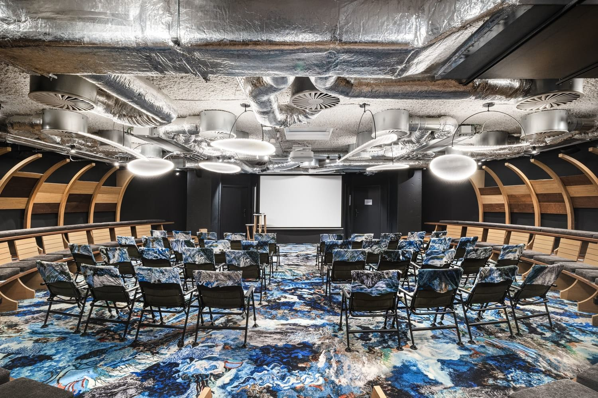

Lieu & infos pratiques
La première édition de Prendre sa place aura lieu dans la salle Atlantis, un amphithéâtre immersif situé au cœur de Bruxelles.

Le lieu de l’événement
Un amphithéâtre immersif et circulaire pensé pour créer une expérience plus intime, plus humaine et plus vivante.
Silversquare Bailli - Salle Atlantis
Avenue Louise 231
1050 Bruxelles
Belgique
Portes ouvertes : 18h50
Début de l’événement : 19h30
Durée estimée : environ 2 heures
Fin prévue : vers 21h30 / 22h00
Un verre de bienvenue sera proposé à l’arrivée. Nous vous conseillons d’arriver dès 18h50 afin de vous installer tranquillement avant le début de la soirée.
Comment y arriver ?
Le Silversquare Bailli se situe sur l’avenue Louise, à proximité du Châtelain. Le lieu est accessible en transports en commun, à vélo, en voiture ou via les solutions de mobilité partagée.
Ouvrir l’itinéraire8 • 91 • 93
38 • 60
Parking payant dans les rues alentour jusque 21h
Villo! Vleurgat
Cambio Vleurgat
Le déroulé de la soirée
Le format alternera récits, moments d’interaction, échanges et mise en perspective finale.
Accueil, verre de bienvenue et installation.
Ouverture de la soirée et premiers récits.
Une expérience collective autour de trajectoires vraies et de moments de bascule.
Un temps pour mettre en perspective ce qui traverse ces récits : le doute, les choix, la légitimité et les transformations.
Les places seront limitées. Réservez votre place ou laissez votre email pour recevoir les prochaines informations.
Réserver ma place